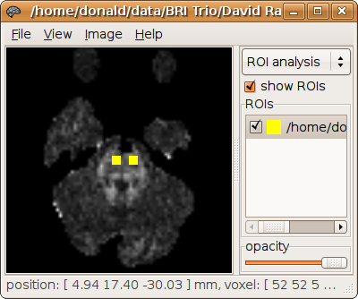
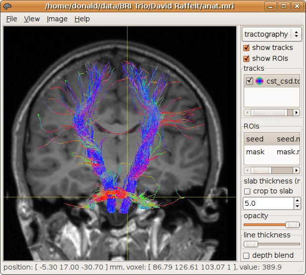
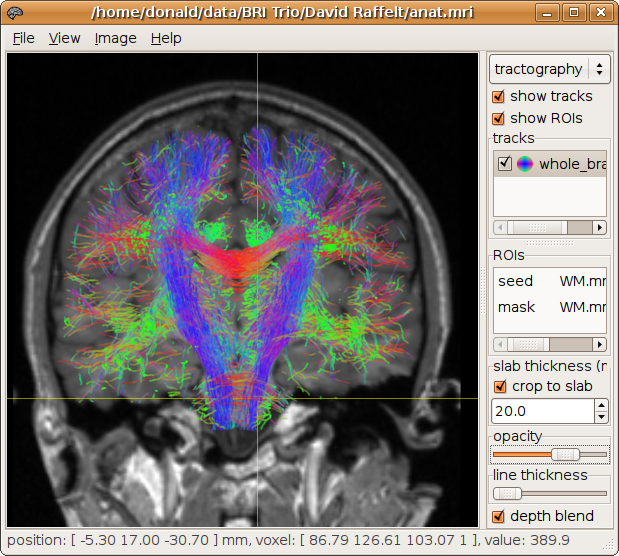

|
|
|
Performing fibre-tracking | |
|---|
To illustrate the command syntax, we start with a very simple example of tensor-based fibre-tracking (see e.g. Mori & van Zijl, 2002 for a review):
> streamtrack DT_STREAM dwi.mif -seed -5.3,17,-30.7,3 -mask mask.mif cst_dt.tck
122 generated, 100 selected [100%]
This generates 100 tracks (the default) using deterministic streamlines,
with orientations calculated using the diffusion tensor model.
The tracks are seeded at random from a spherical ROI position at [ -5.3 17 -30.7 ] with a 3 mm radius.
The mask image mask.mif is also specified to terminate tracks as they leave the brain.
The results are displayed below (see here for more information on displaying results):

Multiple regions of interest can additionally be specified. For example, an inclusion region can be specified to discard tracks that do not pass through it:
> streamtrack DT_STREAM dwi.mif -seed -5.3,17,-30.7,4 -mask mask.mif cst_dt.tck -include -28,-14,53,30
173 generated, 100 selected [100%]

Alternatively, an exclusion region can be specified to discard tracks that do pass through it:
> streamtrack DT_STREAM dwi.mif -seed -5.3,17,-30.7,4 -mask mask.mif cst_dt.tck -exclude 27,16,21,20
124 generated, 100 selected [100%]

Any of these regions can also be specified as a mask image. The ROI analysis tool in MRView can be used to draw a specific ROI of interest, which can then be used for tracking (see here for details). For example, we generate a mask image called seed.mif, corresponding to both cortico-spinal tracts at the level of the pons:
It can be used as a ROI for tracking simply by specifying this image instead of the 4-component spherical ROI specification:
> streamtrack DT_STREAM dwi.mif -seed seed.mif -mask mask.mif cst_dt.tck
133 generated, 100 selected [100%]

To perform fibre-tracking using the orientations provided by constrained spherical deconvolution, simply change the first argument to the streamtrack command to SD_STREAM or SD_PROB, and supply the CSD SH coefficients file instead of the DWI image.
Specifying SD_STREAM as the tracking method will cause the program to use a deterministic fibre-tracking algorithm that simply follows the peaks of the fibre orientation distribution.
Specifying SD_PROB as the tracking method will cause the program to use a probabilistic fibre-tracking algorithm that uses orientations sampled from the fibre orientation distribution at each step (similar to e.g. Behrens et al., 2003 and Parker et al., 2003).
> streamtrack SD_PROB CSD10.mif -seed seed.mif -mask mask.mif cst_csd.tck
1121 generated, 1000 selected [100%]

Whole brain tracking can be performed for example by specifying the white matter mask image as the seed region, and the brain mask image as the mask ROI:
> streamtrack SD_PROB CSD10.mif -seed wm.mif -mask mask.mif whole_brain.tck -num 5000 7311 generated, 5000 selected [100%]
Note that we do not recommend the use of the white matter mask for track termination (i.e. do not use it with the -mask option). The white matter mask as generated by gen_WM_mask is rudimentary and derived using relatively ad-hoc methods. It is not suitable for applications that rely on an accurate white matter mask.
 |
|
|
top | |
|---|